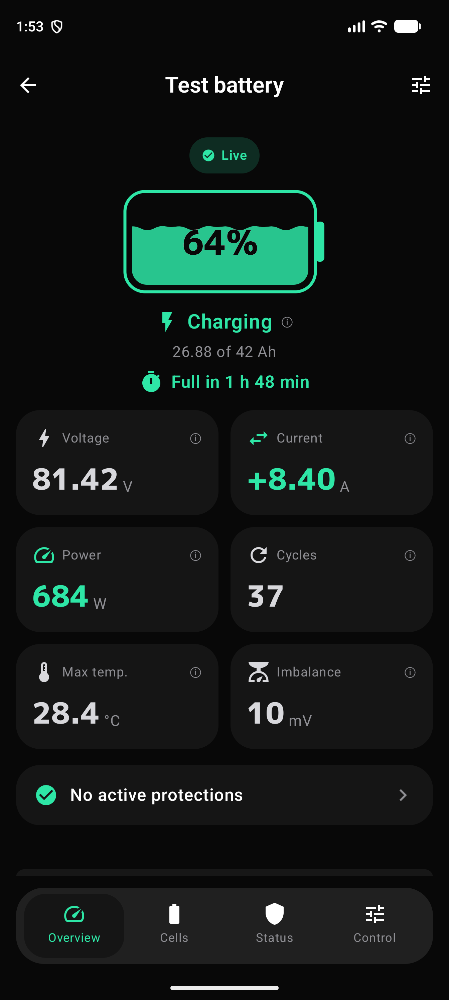
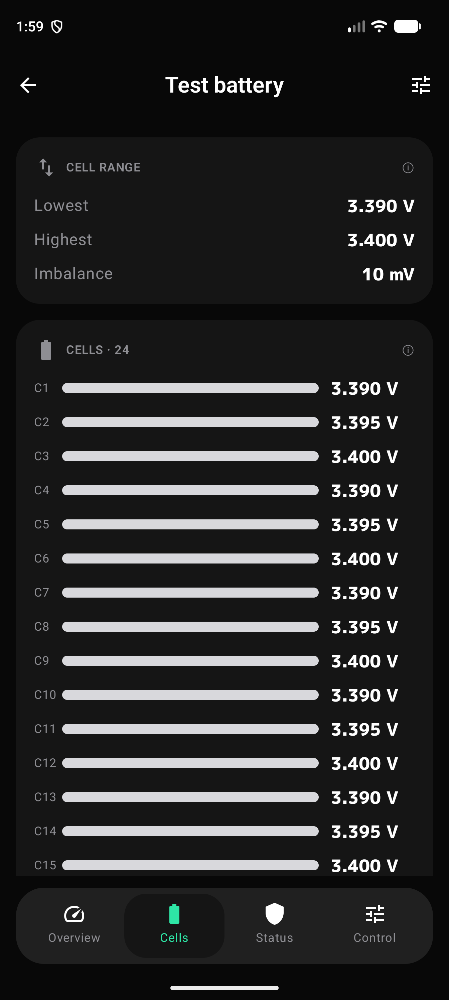
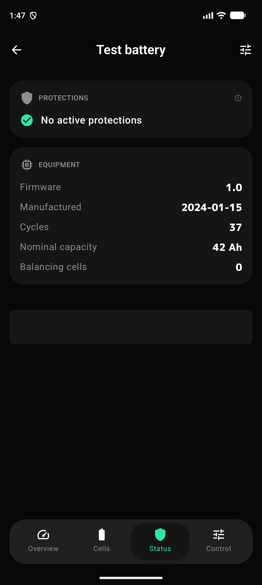

v1.3
Version 1.3
What's new
New advertising provider (bicea.org, 320x50 iframe) in the app. No functional changes.
Screenshots
Real BatMonitor screens on Android, in dark and light themes.



Features
No middlemen: the app talks to the BMS over Bluetooth and renders whatever it answers.
Connects to the BMS over BLE and reconnects on its own if the link drops. No cloud, no relay servers.
No sign-up, no email. Open the app, find your battery and read it. Your data stays on your phone.
Every cell voltage in millivolts, with its bar and the pack imbalance computed on the fly.
Overvoltage, undervoltage, temperature and current. When a protection is active, you see it in Summary and Status.
Balancing cells and imbalance in mV. Ideal for spotting a pack that starts to drift out of balance.
Follows the system theme. Dark is the original, light keeps figures readable in sunlight.
Updates
Version 1.3
New advertising provider (bicea.org, 320x50 iframe) in the app. No functional changes.
Install the APK, switch on the BMS and move closer. That's it.